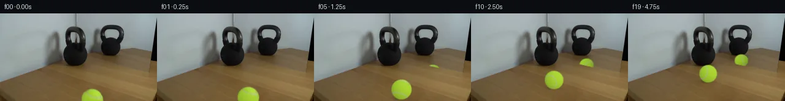

![首帧]()

Round 00
2026-11-05T16:59:18.227844+00:00像素候选变化代码 +263/−0inspection 更新
pixels d5505ffae085b6fb · code 06ae1492d142df97
查看本轮 generate.py 真实 diff
--- previous/generate.py
+++ current/generate.py
@@ -0,0 +1,263 @@
+"""Generate a locked-camera continuation by local pixel operations only.
+
+No model, renderer, network, or external image is used. Source-derived sphere
+appearance, an analytic rolling rotation, and a clipped affine mirror estimate
+are composited over a locally reconstructed tabletop.
+"""
+from pathlib import Path
+import json
+import numpy as np
+from PIL import Image, ImageDraw
+from scipy.ndimage import gaussian_filter, map_coordinates
+from scipy.optimize import least_squares
+from scipy.special import ndtr
+from artifact_io import save
+
+ROOT = Path(__file__).resolve().parent
+SOURCE = np.asarray(Image.open(ROOT / 'first_frame.png').convert('RGB')).astype(float)
+H, W = SOURCE.shape[:2]
+Y, X = np.mgrid[:H, :W]
+CX, CY, R0 = 149.91, 141.25, 17.8
+END = np.array([129.5, 97.3])
+START = np.array([CX, CY])
+MIRROR_S = np.array([.76, .72])
+MIRROR_O = np.array([85.5, 6.])
+SEAM_N = np.array([.29698822, -.83719669, .45923817])
+SEAM_D = .67422606
+SEAM_N /= np.linalg.norm(SEAM_N)
+
+
+def tabletop_plate():
+ """Local wood detail plus a smooth color field fitted around the ball."""
+ distance = np.hypot(X-CX, Y-CY)
+ # Circular repair includes the source's blurred green edge; source's shadow
+ # contact is below the image, so the repair need not invent missing shadows.
+ repair = ndtr((20.5-distance)/.7) * (Y >= 120)
+ # Nearby same-row grain is transferred with local smooth illumination correction.
+ sx = np.clip(X-43, 0, W-1)
+ exemplar = SOURCE[Y, sx]
+ smooth = gaussian_filter(SOURCE, (5, 8, 0))
+ detail = exemplar - gaussian_filter(exemplar, (3.0, 4.0, 0))
+ # Fit a regularized polynomial to an annulus and the tabletop just above it.
+ u=(X-CX)/32.; v=(Y-132.)/24.
+ features=np.stack([np.ones_like(u),u,v,u*u,u*v,v*v,u**3,u*u*v,u*v*v,v**3],-1)
+ fit = (X>=111)&(X<=191)&(Y>=104)&(distance>=22)&(distance<=45)
+ A=features[fit]
+ regularizer=np.diag([0,.1,.1,.9,.9,.9,3,3,3,3])
+ coefs=np.linalg.solve(A.T@A+regularizer, A.T@SOURCE[fit])
+ field=features@coefs
+ # Transfer the fine grain, not the original patch's illumination.
+ rebuilt=field+detail*.68
+ plate=SOURCE*(1-repair[...,None])+rebuilt*repair[...,None]
+ return np.clip(plate,0,255), repair
+
+PLATE, REPAIR = tabletop_plate()
+
+
+def shader(n):
+ """Diffuse color fitted robustly to the visible source hemisphere."""
+ nx,ny,nz=n[...,0],n[...,1],n[...,2]
+ return np.stack([145.814+15.912*nx-12.212*ny+18.144*nz,
+ 184.264+19.325*nx-18.692*ny+19.579*nz,
+ 46.4+4.8*nx-5.5*ny+1.3*nz],-1)
+
+
+def seam(n):
+ # Two opposing lobes approximate the tennis-ball seam on unknown surfaces.
+ # The visible lobe plane is fitted from the pale seam in the source.
+ p=n@SEAM_N
+ d=np.minimum(abs(p-SEAM_D),abs(p+SEAM_D))
+ strength=np.exp(-.5*(d/.039)**2)
+ return strength[...,None]*np.array([5.,-10.,63.])
+
+
+def fuzz(n):
+ # Deterministic fine surface texture; does not flicker between frames.
+ a=np.sin(142*n[...,0]+91*n[...,1]+65*n[...,2])
+ b=np.sin(93*n[...,0]-133*n[...,1]+77*n[...,2])
+ c=np.sin(237*n[...,0]+177*n[...,1]-141*n[...,2])
+ return (a*b*1.3+c*.6)[...,None]*np.array([.8,1.,.42])
+
+# Texture residual on the portion of the sphere actually provided by the source.
+nx=(X-CX)/R0; ny=(Y-CY)/R0
+nz=np.sqrt(np.maximum(0,1-nx*nx-ny*ny))
+N0=np.stack([nx,ny,nz],-1)
+RESIDUAL=SOURCE-shader(N0)-seam(N0)-fuzz(N0)
+known=(nx*nx+ny*ny<1)&(Y>=124)
+RESIDUAL[~known]=0
… diff truncated; 176 more lines …